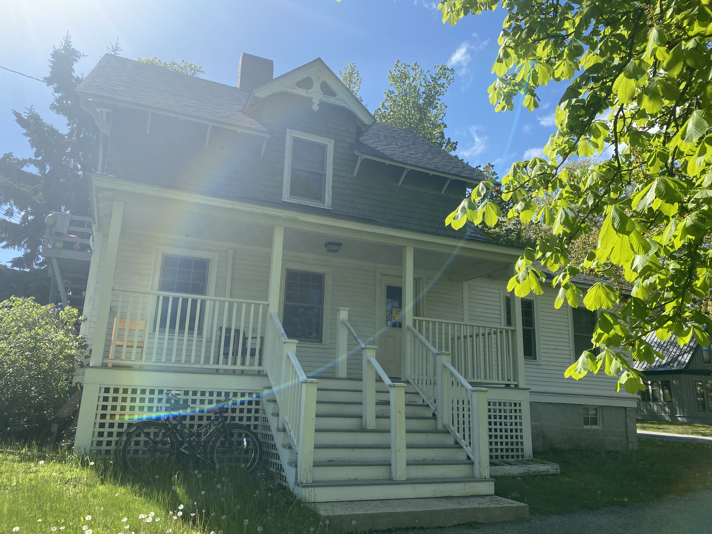
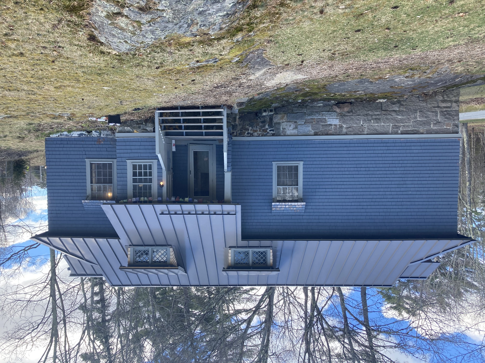
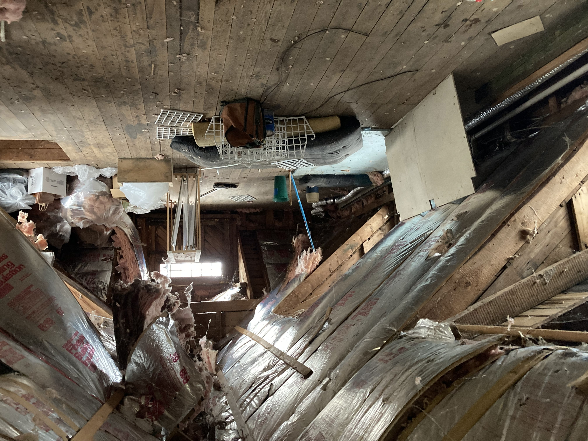
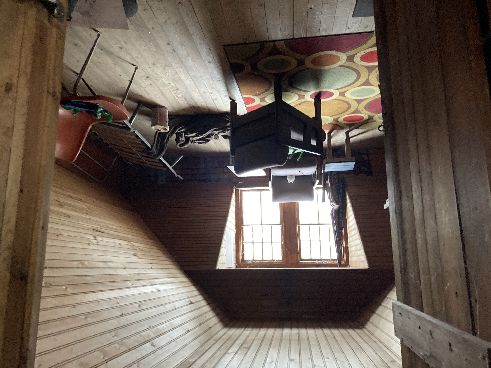

Case Studies
Home Energy Improvement Case Studies
Cottage

The Cottage house was built in 1880 and the residents over the years have complained of moisture issues and insufficient heating and cooling. The school also didn’t like the cost of the heating oil deliveries or that it it was dependent on fossil fuels. After doing a comprehensive energy audit it was determined to need two heat pumps (one on each floor) and a heat pump water heater. As well as the basement needing a vapor barrier and insulation.

Before the energy improvements were made the total amount of energy the house was using was high and most was being wasted do to the leaky basement. Now the house is much tighter, uses less energy more efficiently and is no longer reliant on fossil fuels. The residents no longer have moisture issues and comfortable heating and cooling year round.
Carriage

The Carriage house was built in 1887 and the residents over the years have complained of moisture issues and inconsistent heating and cooling throughout the house. The school also didn’t like the cost of the heating oil deliveries or that it it was dependent on fossil fuels. After doing a comprehensive energy audit it was determined to need two heat pumps and a heat pump water heater. As well as the basement needing a vapor barrier and the attic and basement needing insulation.


Before the energy improvements were made the total amount of energy the house was using was high and most was being wasted do to the leaky basement and attic. Now the house is much tighter, uses less energy more efficiently and is no longer reliant on fossil fuels. Now the residents have a much more evenly heated and cooled home.